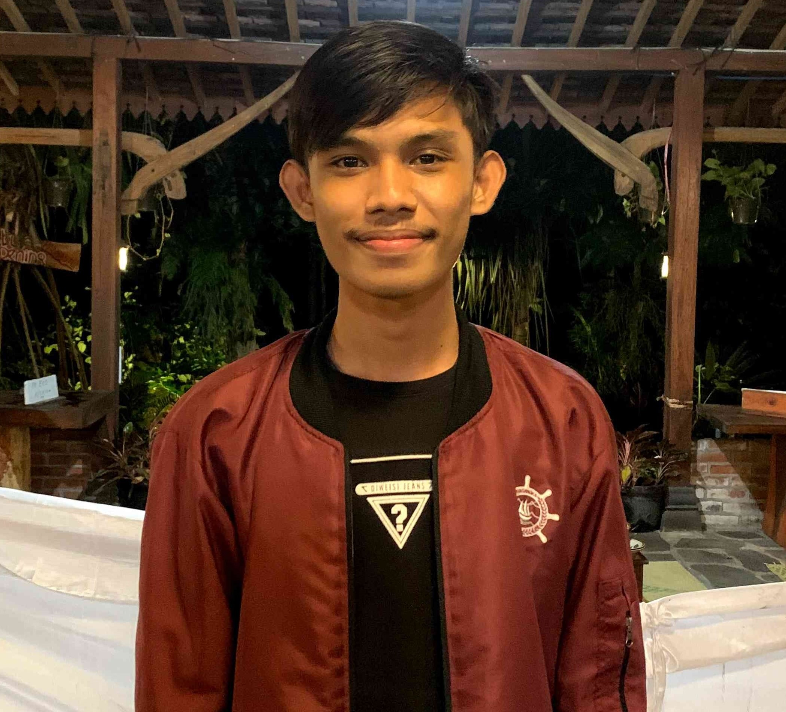
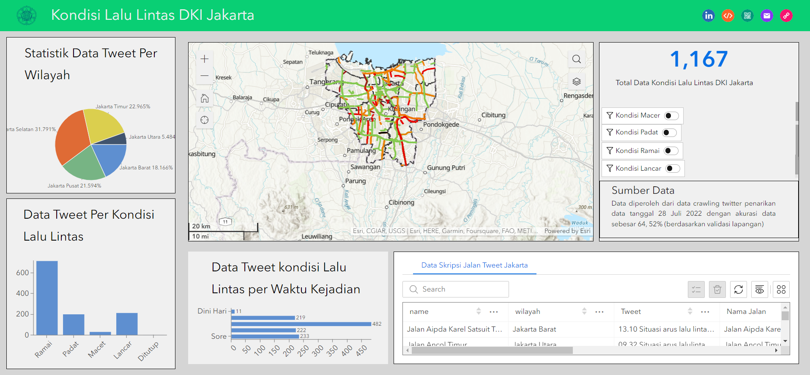
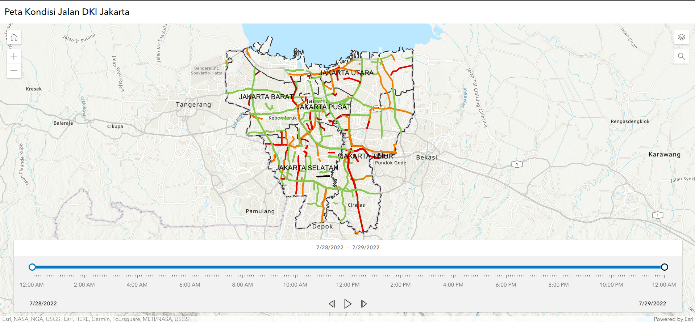
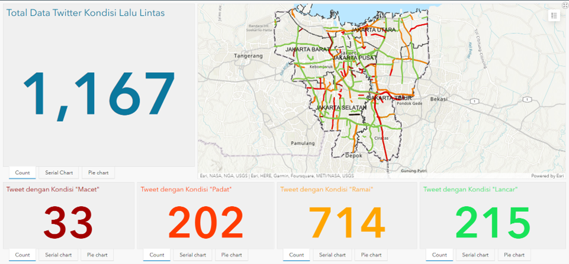
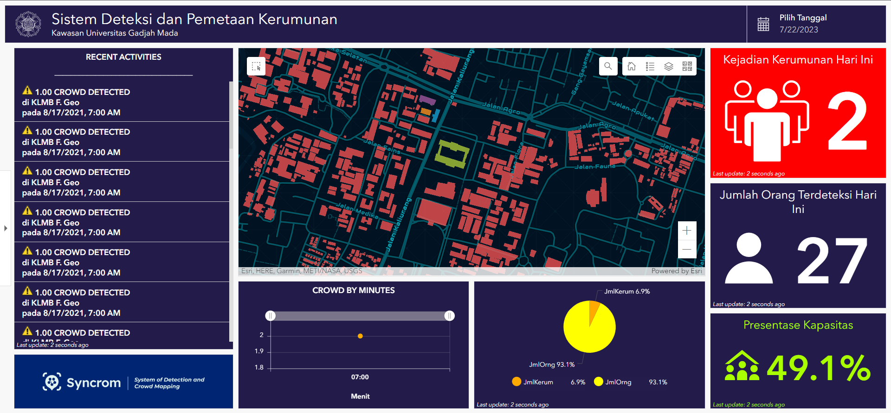
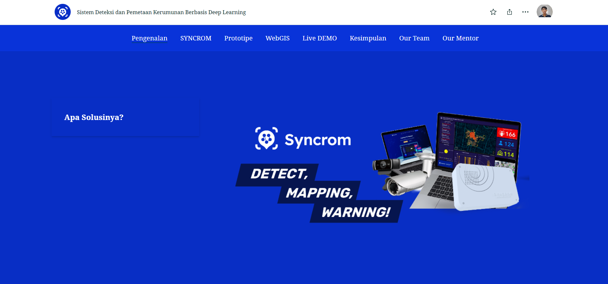
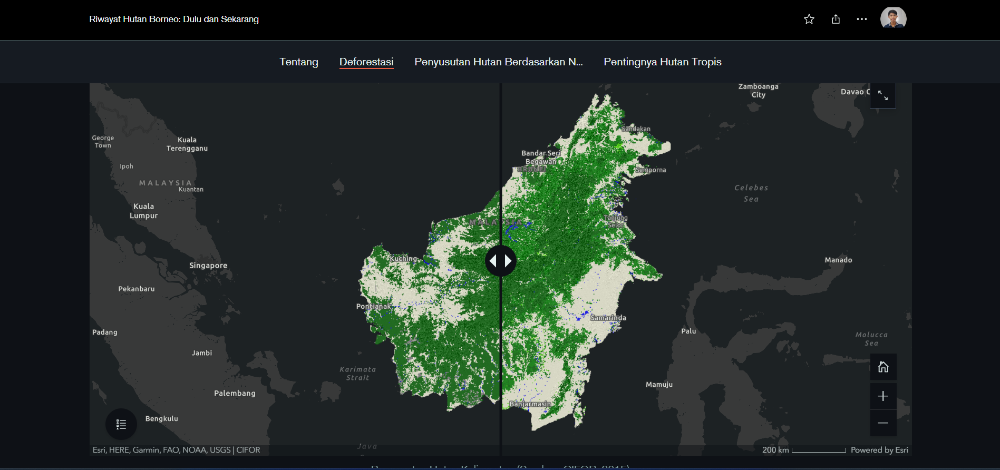

GIS Engineer · WebGIS Developer · Spatial Data Scientist
3+ years transforming geospatial complexity into actionable insight. Currently building spatial intelligence at APRIL, Riau — from satellite imagery to strategic forest planning.

Geospatial Data Analyst and Spatial Data Scientist with 3+ years of experience, currently serving as Strategic Planner (Spatial Modeling & Landbank Analyst) at APRIL, one of the world's largest pulp and paper companies, based in Riau.
I specialize in transforming complex geospatial datasets into strategic intelligence — from building wood supply-demand forecast models to conducting remote sensing-based landcover analysis and developing automated WebGIS platforms.
Graduate of Cartography and Remote Sensing at Universitas Gadjah Mada (GPA 3.55/4.00), with academic recognition including a Gold Medal at the International Science and Invention Fair 2021 and the Karya Salemba Empat Scholarship.






Pemetaan Multi-Tingkat Potensi Bijih Besi Menggunakan Citra Hyperspektral EO-1 Hyperion Dan Multispektral Landsat 8-OLI Di Sekitar Sungai Progo, Yogyakarta
Correlation of Drought and Fire Hotspots using Standardized Precipitation Index (SPI) from TRMM Rainfall Data (2015–2019) at Central Kalimantan, Indonesia
Mapping of Regional Vulnerability to Determine Malaria Using Physical, Climate, and Socio-demographic Variables in Purworejo Regency, Central Java
Open to new opportunities in geospatial data science, WebGIS development, or spatial analytics. Feel free to reach out!